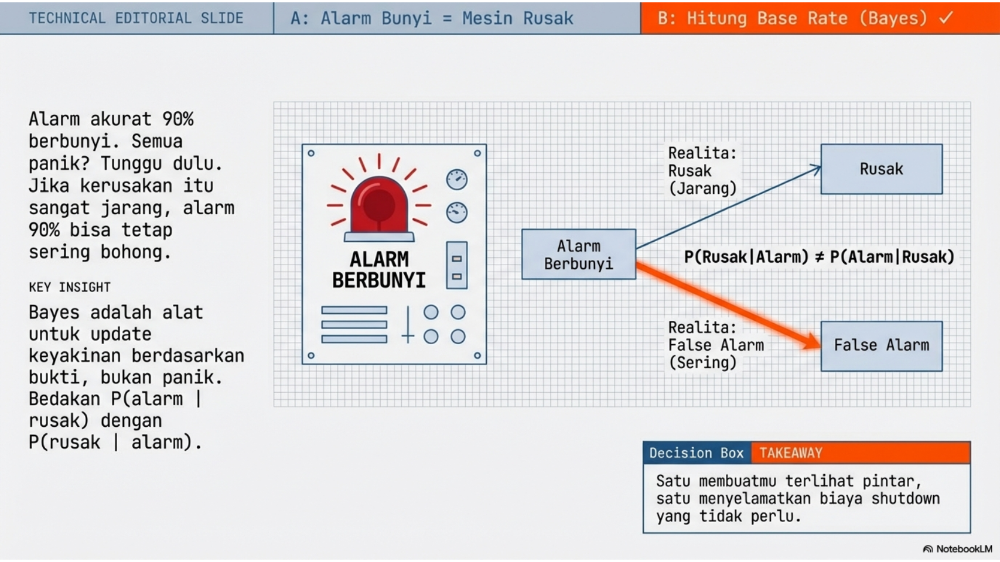
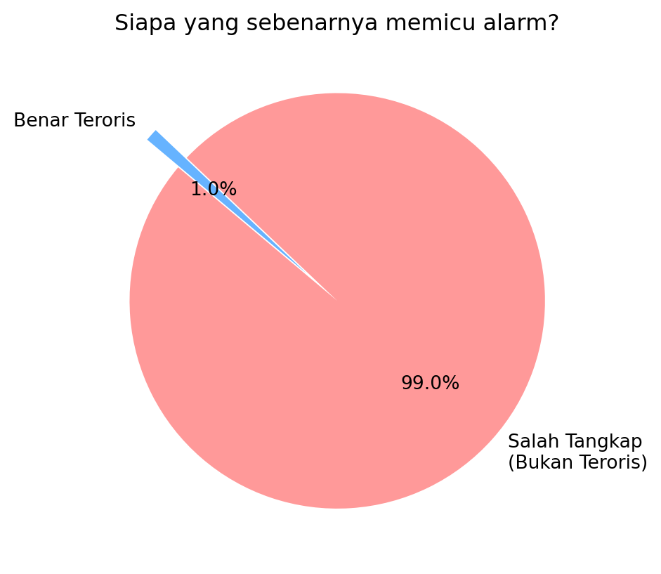

Probability Theorems, Conditional Probability, Bayes Theorem

“Alarm akurat 90%. Alarm bunyi. Semua panik: ‘mesin rusak!’ Tapi… kalau kerusakan itu sangat jarang, alarm 90% bisa tetap sering bohong. Ini plot twist klasik: base rate. Bayes itu alat untuk ‘update keyakinan’ berdasarkan bukti, bukan berdasarkan panik. Hari ini kamu belajar beda ‘P(alarm | rusak)’ dan ‘P(rusak | alarm)’. Satu membuatmu terlihat pintar, satu menyelamatkan biaya shutdown.”
5.1 Python First
Teorema Bayes dan Porbabilitas Kondisional
5.1.1 The Hook: “Jebakan Tes DNA/Wajah”
Aktivitas: Tampilkan skenario FaceID/Biometrik. “Jika sistem keamanan punya akurasi 99%, dan alarm berbunyi mendeteksi teroris, berapa persen kemungkinan orang itu benar-benar teroris?” Tebakan Mahasiswa: Kebanyakan akan menjawab 99%. Realita: Tunjukkan bahwa jika teroris sangat langka (misal 1 dari 10.000), peluangnya mungkin di bawah 1%. Ini adalah Base-Rate Fallacy.
Anda memiliki detektor teroris melalui foto dengan akurasi 99%. Kalau anda mendeteksi seseorang positif teroris berapa yakin anda boahwa ia seorang teroris?
Ini soal mengkuantisasi keyakinan. Kita modelkan dengan konsep peerobabilitas.
Ruang Sample dibangkikan dua random sources: * Subset A para teroris: Dari setiap 100 orang yang ada dalam populasi, terdapat 1 orang teroris, yang kita tidak tahu siapa. * Subset B positif teroris: Dari deteksi foto dari orang yang lewat, terdapt orang yang di nyatakan positif teroris atau negatif teroris dengan tingkat akurasi 99%
Logika: kalau total populasi ada 10000 orang, jumlah teroris 10 orang. kalau 10000 orang ini di foto, maaka dari 10 teroris ini yang terdeteksi 99% x 10 teroris alias 10 teroris terdeteksi semua. tapi 9990 bukan teroris dan akurasinya 99%, bearti 1% dari 9990 non teroris yaitu 100 orang akan dinyatakan positif.
Total yang terdeteksi teroris jadi 10 teroris true positive ditambah 100 nonteroris yangterciduk false-positive dengan total 110 orang. seberapa yakin anda sekarang bila anda tahu dari 110 yang anda tangkap padahal jumlah teroris hanya 10.
Apalagi bila anda tahu dari 10000 penduduk, hanya 1 orang teroris, sebagaimana dalam simulasi berikut ini. Artnya bila populasi ada 100000, cuma ada 10 teroris
Lihat kode
import numpy as npteroris_rate =1/10000N =100000# Populasinik = np.arange(N)status=["teroris","biasa"]prevalensi=[teroris_rate,1-teroris_rate]nik_teroris = np.random.choice(status,size=N,p=prevalensi)# print(teroris_rate, 1-teroris_rate, nik_teroris)hitung_teroris =list(nik_teroris).count("teroris")hitung_biasa =list(nik_teroris).count("biasa")print("teroris dan biasa:",hitung_teroris, hitung_biasa)# Deteksiakurasi =99/100false_positive =0false_negative =0true_positive =0true_negative =0for i in nik: rand = np.random.random()
teroris dan biasa: 7 99993
6 Proses melalui externam unctions
Lihat kode
import matplotlib.pyplot as pltdef simulasi_base_rate_fallacy():# 1. Parameter Input populasi_total =10000 prevalensi_teroris =1/10000# 1 teroris dari 10.000 orang akurasi_sistem =0.99# 99%# 2. Perhitungan Logika# Jumlah teroris dan orang biasa dalam populasi jumlah_teroris = populasi_total * prevalensi_teroris jumlah_orang_biasa = populasi_total - jumlah_teroris# Kasus A: Alarm bunyi karena BENAR teroris (True Positive)# Sistem mendeteksi 99% dari 1 teroris yang ada alarm_benar = jumlah_teroris * akurasi_sistem# Kasus B: Alarm bunyi padahal orang biasa (False Positive)# Sistem salah mendeteksi 1% dari 9.999 orang biasa alarm_salah = jumlah_orang_biasa * (1- akurasi_sistem)# Total alarm yang berbunyi total_alarm_bunyi = alarm_benar + alarm_salah# 3. Hasil Akhir (Peluang Aktual) prob_aktual = (alarm_benar / total_alarm_bunyi) *100# 4. Tampilkan Hasil Ke Konsolprint("=== SIMULASI BASE-RATE FALLACY ===")print(f"Total Populasi : {populasi_total} orang")print(f"Jumlah Teroris Nyata : {int(jumlah_teroris)} orang")print(f"Akurasi Sistem : {akurasi_sistem*100}%")print("-"*35)print(f"Alarm Berbunyi Benar : {alarm_benar:.2f} kali")print(f"Alarm Berbunyi Salah : {alarm_salah:.2f} kali (False Positive)")print(f"Total Alarm Berbunyi : {total_alarm_bunyi:.2f} kali")print("-"*35)print(f"TEBAKAN UMUM : 99%")print(f"REALITA (Probabilitas): {prob_aktual:.2f}%")print("-"*35)# 5. Visualisasi labels = ['Salah Tangkap\n(Bukan Teroris)', 'Benar Teroris'] sizes = [alarm_salah, alarm_benar] colors = ['#ff9999', '#66b3ff'] plt.figure(figsize=(7, 5)) plt.pie(sizes, labels=labels, autopct='%1.1f%%', startangle=140, colors=colors, explode=(0, 0.2)) plt.title('Siapa yang sebenarnya memicu alarm?') plt.show()if__name__=="__main__": simulasi_base_rate_fallacy()
=== SIMULASI BASE-RATE FALLACY ===
Total Populasi : 10000 orang
Jumlah Teroris Nyata : 1 orang
Akurasi Sistem : 99.0%
-----------------------------------
Alarm Berbunyi Benar : 0.99 kali
Alarm Berbunyi Salah : 99.99 kali (False Positive)
Total Alarm Berbunyi : 100.98 kali
-----------------------------------
TEBAKAN UMUM : 99%
REALITA (Probabilitas): 0.98%
-----------------------------------

Secara umum: Kita berbicara tentang dua subset A, B, komplemennya dan dan irisanya
6.0.1 Spam filter
Sebuah filter spam mengetahui bahwa 20% email adalah spam. 90% spam mengandung kata “Promo”, sementara hanya 5% email normal mengandung kata tersebut. Jika sebuah email mengandung kata “Promo”, hitung probabilitas itu adalah spam.
Solusi: A : Spam B : Promo
Filter: B
Untuk menghitung probabilitas ini, kita menggunakan Teorema Bayes. Masalah ini adalah contoh klasik dari bagaimana informasi baru (munculnya kata “Promo”) memperbarui keyakinan awal kita (prior) tentang sebuah email.
6.0.2 1. Identifikasi Data
Pertama, kita definisikan variabel-variabelnya:
\(P(S)\): Probabilitas awal email adalah Spam = \(0,20\)
\(P(N)\): Probabilitas awal email adalah Normal = \(0,80\)
\(P(P|S)\): Probabilitas ada kata “Promo” jika email itu Spam (Sensitivity) = \(0,90\)
\(P(P|N)\): Probabilitas ada kata “Promo” jika email itu Normal (False Positive Rate) = \(0,05\)
6.0.3 2. Rumus & Perhitungan
Kita ingin mencari \(P(S|P)\), yaitu probabilitas email adalah Spam dengan syarat di dalamnya terdapat kata “Promo”.
\[P(S|P) = \frac{P(P|S) \times P(S)}{P(P)}\]
Di mana \(P(P)\) adalah probabilitas total munculnya kata “Promo” baik di email spam maupun normal:
Naive Bayes Classifier adalah algoritma pembelajaran mesin (machine learning) yang digunakan untuk klasifikasi, berdasarkan Teorema Bayes.
Disebut “Naive” (lugu/polos) karena algoritma ini membuat asumsi yang sangat kuat bahwa setiap fitur (variabel) dalam data bersifat independen satu sama lain. Artinya, keberadaan satu fitur dianggap tidak ada hubungannya dengan keberadaan fitur lainnya.
6.0.7 Konsep Dasar: Teorema Bayes
Secara matematis, Naive Bayes bekerja dengan menghitung peluang suatu kelas berdasarkan sekumpulan fitur yang ada. Rumus dasarnya adalah:
\[P(A|B) = \frac{P(B|A) \cdot P(A)}{P(B)}\]
\(P(A|B)\): Peluang kejadian A terjadi setelah B terjadi (Posterior).
\(P(B|A)\): Peluang kejadian B terjadi jika A benar (Likelihood).
\(P(A)\): Peluang awal kejadian A (Prior).
\(P(B)\): Peluang awal kejadian B (Evidence).
6.0.8 Naive Bayes Classfier in Peer-to-Peer Lending
Dalam konteks Peer-to-Peer (P2P) Lending, Naive Bayes Classifier sering digunakan sebagai model awal (baseline) untuk menentukan apakah seorang calon peminjam (borrower) berisiko gagal bayar (Default) atau tidak (Success).
Berikut adalah simulasi kasus sederhana menggunakan data profil peminjam.
6.0.8.1 1. Skenario Data Peminjam
Misalkan kita memiliki data historis dengan fitur-fitur berikut:
Penghasilan: Tinggi, Sedang, Rendah.
Status Rumah: Milik Sendiri, Sewa.
Riwayat Kredit: Lancar, Macet.
Dalam kasus Credit Scoring, kita akan menghitung:
Prior Probability: Peluang awal seseorang “Lancar” atau “Gagal” bayar.
Likelihood: Peluang munculnya fitur tertentu (misal: Penghasilan Rendah) jika diketahui orang tersebut “Gagal”.
6.0.8.2 Kode Python: Naive Bayes Manual (Tanpa Sklearn)
Lihat kode
import pandas as pd# 1. Data Historis P2P Lendingdata = {'Penghasilan': ['Tinggi', 'Rendah', 'Sedang', 'Rendah', 'Tinggi', 'Sedang', 'Rendah'],'Status_Rumah': ['Milik', 'Sewa', 'Sewa', 'Sewa', 'Milik', 'Milik', 'Sewa'],'Target': ['Lancar', 'Gagal', 'Lancar', 'Gagal', 'Lancar', 'Lancar', 'Gagal']}df = pd.DataFrame(data)def hitung_naive_bayes(data_baru):# --- STEP 1: Hitung Prior P(Lancar) dan P(Gagal) --- total_data =len(df) p_lancar =len(df[df['Target'] =='Lancar']) / total_data p_gagal =len(df[df['Target'] =='Gagal']) / total_data# --- STEP 2: Hitung Likelihood untuk setiap Fitur ---# Kita akan menghitung P(Fitur | Lancar) dan P(Fitur | Gagal) prob_lancar = p_lancar prob_gagal = p_gagalfor kolom, nilai in data_baru.items():# Likelihood untuk Lancar count_fitur_lancar =len(df[(df[kolom] == nilai) & (df['Target'] =='Lancar')]) likelihood_lancar = count_fitur_lancar /len(df[df['Target'] =='Lancar']) prob_lancar *= likelihood_lancar# Likelihood untuk Gagal count_fitur_gagal =len(df[(df[kolom] == nilai) & (df['Target'] =='Gagal')]) likelihood_gagal = count_fitur_gagal /len(df[df['Target'] =='Gagal']) prob_gagal *= likelihood_gagal# --- STEP 3: Normalisasi (Agar total probabilitas = 100%) --- total_prob = prob_lancar + prob_gagal hasil_lancar = (prob_lancar / total_prob) *100 hasil_gagal = (prob_gagal / total_prob) *100return hasil_lancar, hasil_gagal# --- UJI COBA ---# Peminjam baru: Penghasilan Rendah, Status Rumah Sewacalon_peminjam = {'Penghasilan': 'Rendah', 'Status_Rumah': 'Sewa'}lancar, gagal = hitung_naive_bayes(calon_peminjam)print(f"Hasil Analisis Risiko:")print(f"- Peluang Lancar: {lancar:.2f}%")print(f"- Peluang Gagal : {gagal:.2f}%")print(f"Keputusan: {'DITERIMA'if lancar > gagal else'DITOLAK'}")
Hasil Analisis Risiko:
- Peluang Lancar: 0.00%
- Peluang Gagal : 100.00%
Keputusan: DITOLAK
6.0.9 Penjelasan Logika Matematikanya
Ketika Anda menjalankan kode di atas, inilah yang dilakukan sistem secara manual:
Mencari “Prior”: Sistem melihat dari 7 data, berapa yang “Lancar” (4/7) dan “Gagal” (3/7).
Mencari “Likelihood”: * Dari semua orang yang Gagal, berapa yang Penghasilannya Rendah? (Sangat sering).
Dari semua orang yang Lancar, berapa yang Rumahnya Sewa? (Jarang).
Perkalian Berantai: Sesuai rumus Naive Bayes, semua peluang tersebut dikalikan.
Jika hasil perkalian untuk kategori “Gagal” lebih besar, maka sistem akan menolak pinjaman tersebut.
6.0.10 Keuntungan Membuat Sendiri:
Transparansi: Anda bisa melihat persis mengapa seseorang ditolak (misalnya karena nilai Likelihood pada fitur tertentu nol).
Tanpa Dependency: Kode ini sangat ringan karena tidak membutuhkan library besar, cukup Python dasar (atau Pandas untuk mempermudah tabel).
Laplace Smoothing: Jika ada fitur yang belum pernah muncul di data latih (peluang = 0), Anda bisa dengan mudah menambahkan “+1” pada perhitungan (teknik Laplace Smoothing) agar hasil perkalian tidak menjadi nol semua.
Komponen,Tanpa Smoothing,Dengan Laplace Smoothing Pembilang,count,count + 1 Penyebut,total_kategori,total_kategori + jumlah_variasi_fitur Hasil jika data baru,0 (Error/Buntu),Tetap menghasilkan angka kecil (Stabil)
6.0.11 2. Kode Python sklearn: Credit Scoring Model
Mengapa algoritma ini disebut “Naive” dalam kasus pinjaman?
Asumsi Independensi: Model menganggap Penghasilan tidak ada hubungannya dengan Status Rumah. Padahal, di dunia nyata, orang berpenghasilan tinggi biasanya lebih cenderung memiliki rumah sendiri.
Kecepatan vs Akurasi: Meskipun asumsinya “polos”, Naive Bayes sangat cepat untuk memproses ribuan pengajuan pinjaman secara real-time di aplikasi P2P Lending.
6.0.13 4. Interpretasi Hasil untuk Keputusan Bisnis
Dalam praktiknya, perusahaan P2P Lending tidak hanya melihat hasil “Lancar” atau “Gagal”, tetapi melihat Probabilitas (Score):
Probabilitas Lancar
Kategori Risiko
Tindakan Sistem
> 80%
Low Risk
Pinjaman langsung disetujui (Auto-approve)
50% - 80%
Medium Risk
Perlu verifikasi manual oleh tim analis
< 50%
High Risk
Pinjaman ditolak secara otomatis
6.0.14 Keuntungan untuk Riset Engineering/Ekonomi:
Model ini sangat berguna jika Anda ingin membangun sistem early warning yang ringan di sisi server. Karena perhitungannya hanya berbasis probabilitas kondisional, ia tidak membebani memori server meskipun volume data peminjam sangat besar.
Simulasi kode Python sederhana untuk menghitung Naive Bayes ini menggunakan library Scikit-Learn
Kita akan menggunakan library scikit-learn, yang merupakan standar industri untuk machine learning di Python.
Berikut adalah simulasi sederhana untuk mengklasifikasikan apakah sebuah pesan adalah “Promo” atau “Pesan Biasa” berdasarkan kata-kata di dalamnya.
6.0.15 Contoh Sederhana: Klasifikasi Email (Spam atau Bukan)
Bayangkan kita ingin menentukan apakah sebuah email adalah Spam atau Bukan Spam berdasarkan kata-kata yang muncul di dalamnya.
6.0.15.1 1. Data Latihan (Skenario)
Misalkan dari 100 email yang kita miliki:
20 email adalah Spam.
80 email adalah Bukan Spam.
Dalam email Spam, kata “Hadiah” muncul 15 kali.
Dalam email Bukan Spam, kata “Hadiah” hanya muncul 4 kali.
6.0.15.2 2. Pertanyaan
Jika ada email baru masuk dengan kata “Hadiah”, apakah email tersebut termasuk Spam?
6.0.15.3 3. Perhitungan Cepat
Algoritma akan membandingkan dua peluang:
Peluang Spam jika ada kata “Hadiah”: Dihitung dari seberapa sering “Hadiah” muncul di kategori Spam dikali dengan total peluang email itu Spam.
Peluang Bukan Spam jika ada kata “Hadiah”: Dihitung dari seberapa sering “Hadiah” muncul di kategori Bukan Spam dikali dengan total peluang email itu Bukan Spam.
6.0.15.4 4. Keputusan
Meskipun kata “Hadiah” muncul di kedua jenis email, karena frekuensinya jauh lebih tinggi di kategori Spam (\(15/20\) dibandingkan \(4/80\)), Naive Bayes akan menyimpulkan bahwa email tersebut memiliki probabilitas lebih tinggi sebagai Spam.
6.0.16 Mengapa Algoritma Ini Populer?
Sangat Cepat: Karena perhitungannya sederhana (hanya perkalian probabilitas).
Hemat Data: Tetap bekerja dengan baik meskipun jumlah data latihnya sedikit.
Efisien untuk Teks: Sangat sering digunakan untuk analisis sentimen, filter spam, dan kategorisasi berita.
6.0.17 Kode Python: Naive Bayes Sederhana
Lihat kode
from sklearn.feature_extraction.text import CountVectorizerfrom sklearn.naive_bayes import MultinomialNB# 1. Data Latih (Kalimat dan Labelnya)# 0 = Pesan Biasa, 1 = Promopesan = ["Halo apa kabar hari ini", "Rapat dosen jam sepuluh pagi", "Dapatkan diskon hadiah pulsa sekarang", "Promo beli satu gratis satu","Jangan lupa kerjakan tugas kuliah"]label = [0, 0, 1, 1, 0] # 2. Mengubah teks menjadi angka (Vektorisasi)# Naive Bayes butuh angka, bukan kata-kata mentahvectorizer = CountVectorizer()X_train = vectorizer.fit_transform(pesan)# 3. Membuat dan Melatih Model (Multinomial Naive Bayes)model = MultinomialNB()model.fit(X_train, label)# 4. Uji Coba dengan Pesan Barupesan_baru = ["Ada hadiah diskon khusus untuk Anda"]X_test = vectorizer.transform(pesan_baru)print(X_test)prediksi = model.predict(X_test)# Output Hasilkategori ="Promo"if prediksi[0] ==1else"Pesan Biasa"print(f"Pesan: '{pesan_baru[0]}'")print(f"Hasil Klasifikasi: {kategori}")
<Compressed Sparse Row sparse matrix of dtype 'int64'
with 2 stored elements and shape (1, 24)>
Coords Values
(0, 3) 1
(0, 6) 1
Pesan: 'Ada hadiah diskon khusus untuk Anda'
Hasil Klasifikasi: Promo
6.0.18 Penjelasan Singkat Alur Kerja:
CountVectorizer: Karena komputer tidak paham kata-kata, kita mengubah kalimat menjadi tabel frekuensi kata (sering disebut Bag of Words).
MultinomialNB: Ini adalah varian Naive Bayes yang paling cocok untuk data teks (menghitung kemunculan kata).
fit: Model mempelajari pola kata mana yang sering muncul di kategori “Promo” dan mana yang di “Pesan Biasa”.
predict: Model menghitung probabilitas berdasarkan kata-kata di pesan_baru (seperti kata “hadiah” dan “diskon”) untuk menentukan kategori akhirnya.
6.0.19 Keuntungan untuk Penelitian/Pengajaran:
Dalam konteks akademik, Naive Bayes sangat berguna sebagai baseline model. Sebelum menggunakan algoritma yang lebih kompleks (seperti Neural Networks), peneliti biasanya menjalankan Naive Bayes terlebih dahulu untuk melihat performa dasarnya karena sangat cepat dan efisien.
Apakah Anda ingin saya membantu membuatkan visualisasi grafik (seperti bar chart) untuk menunjukkan bagaimana probabilitas kata-kata tersebut didistribusikan dalam model ini?
Analisis sentimen adalah penggunaan Naive Bayes untuk menentukan apakah sebuah teks (seperti ulasan produk atau cuitan media sosial) bernada Positif atau Negatif.
Ini sangat populer karena dalam bahasa manusia, kata-kata tertentu seperti “kecewa”, “lambat”, atau “puas” memiliki bobot probabilitas yang sangat kuat terhadap sentimen tertentu.
6.0.20 Kode Python: Analisis Sentimen Ulasan Produk
Berikut adalah simulasi sederhana menggunakan data ulasan fiktif:
import pandas as pdfrom sklearn.feature_extraction.text import CountVectorizerfrom sklearn.naive_bayes import MultinomialNB# 1. Dataset Latih (Review Produk)# 0 = Negatif, 1 = Positifdata_review = {'ulasan': ["Barang bagus sekali, pengiriman cepat","Sangat puas dengan kualitasnya","Pelayanan ramah dan respon kilat","Kecewa, barang rusak saat sampai","Pengiriman lambat sekali, kapok belanja di sini","Kualitas buruk, tidak sesuai foto","Sesuai pesanan dan berfungsi baik" ],'sentimen': [1, 1, 1, 0, 0, 0, 1]}df_review = pd.DataFrame(data_review)# 2. Vektorisasivectorizer = CountVectorizer()X_latih = vectorizer.fit_transform(df_review['ulasan'])# 3. Training Modelmodel_sentimen = MultinomialNB()model_sentimen.fit(X_latih, df_review['sentimen'])# 4. Uji Coba Ulasan Baruulasan_baru = ["Barangnya jelek, saya sangat menyesal beli ini"]X_baru = vectorizer.transform(ulasan_baru)prediksi = model_sentimen.predict(X_baru)# Outputhasil ="Positif"if prediksi[0] ==1else"Negatif"print(f"Ulasan: '{ulasan_baru[0]}'")print(f"Prediksi Sentimen: {hasil}")
6.0.21 Bagaimana Naive Bayes Menilai Sentimen?
Naive Bayes bekerja seperti “Kamus Probabilitas”:
Pemisahan Kata (Tokenization): Model memecah kalimat menjadi: “Barangnya”, “jelek”, “saya”, “sangat”, “menyesal”, “beli”, “ini”.
Pencarian Nilai: Model mencari kata “jelek” dan “menyesal” di dalam memori data latihnya.
Akumulasi Skor: * Kata “jelek” hampir 100% muncul di ulasan berlabel 0 (Negatif).
Meskipun ada kata netral seperti “saya” atau “beli”, keberadaan kata bermuatan negatif yang kuat akan menarik skor probabilitas ke arah Negatif.
Independensi: Naive Bayes tidak peduli urutan kata (itulah sebabnya disebut Naive). Ia hanya peduli bahwa kata “jelek” muncul, terlepas dari apakah itu di awal atau di akhir kalimat.
6.0.22 Tantangan dalam Analisis Sentimen
Naive Bayes terkadang kesulitan dengan Sarkasme. Contoh: “Wah, barangnya datang cepat sekali, cuma butuh waktu 3 minggu!” Secara harfiah ada kata “cepat”, sehingga Naive Bayes mungkin mengira itu Positif, padahal maksudnya Negatif.
Apakah Anda ingin saya menunjukkan cara menangani masalah “kata-kata umum” (seperti ‘dan’, ‘yang’, ‘di’) yang sering mengganggu akurasi model menggunakan teknik TF-IDF?
Tentu, mari kita tingkatkan simulasinya menggunakan TF-IDF (Term Frequency-Inverse Document Frequency).
Dalam Naive Bayes sederhana (Count Vectorizer), kita hanya menghitung frekuensi kata. Masalahnya, kata-kata umum seperti “yang”, “dan”, “di”, atau “saya” sering muncul di semua kategori sehingga tidak membantu menentukan sentimen (malah mengaburkan prediksi).
TF-IDF memberikan bobot tinggi pada kata yang unik dan bermakna (seperti “kecewa” atau “puas”) dan memberikan bobot rendah pada kata-kata umum.
6.0.23 Kode Python: Naive Bayes + TF-IDF
import pandas as pdfrom sklearn.feature_extraction.text import TfidfVectorizerfrom sklearn.naive_bayes import MultinomialNB# 1. Dataset Latih (Review Produk Lebih Beragam)data_ulasan = {'teks': ["Barang bagus sekali, saya sangat puas dan senang","Layanan lambat, saya sangat kecewa dan tidak puas","Kualitas produk ini sangat luar biasa, rekomended","Penjual tidak ramah, respon sangat lama sekali","Sesuai dengan deskripsi, barang berfungsi normal","Barang rusak, jangan beli di toko ini, parah" ],'sentimen': [1, 0, 1, 0, 1, 0] # 1: Positif, 0: Negatif}df = pd.DataFrame(data_ulasan)# 2. Menggunakan TF-IDF Vectorizer# Kita buang kata umum (stop_words) dalam bahasa Indonesia secara manual atau otomatistfidf = TfidfVectorizer()X_tfidf = tfidf.fit_transform(df['teks'])# 3. Training Model Naive Bayesmodel_tfidf = MultinomialNB()model_tfidf.fit(X_tfidf, df['sentimen'])# 4. Uji Coba dengan Kalimat yang Mengandung Kata Umumkalimat_uji = ["Saya sebenarnya suka barangnya, tapi sayang pengiriman sangat lambat"]X_uji = tfidf.transform(kalimat_uji)prediksi = model_tfidf.predict(X_uji)prob = model_tfidf.predict_proba(X_uji)# Outputhasil ="Positif"if prediksi[0] ==1else"Negatif"print(f"Kalimat: '{kalimat_uji[0]}'")print(f"Hasil Prediksi: {hasil}")print(f"Skor Keyakinan: Negatif ({prob[0][0]:.2f}), Positif ({prob[0][1]:.2f})")
6.0.24 Mengapa TF-IDF Lebih Baik?
Term Frequency (TF): Seberapa sering kata muncul dalam satu dokumen.
Inverse Document Frequency (IDF): Seberapa jarang kata tersebut muncul di seluruh kumpulan data.
Kata “Saya” muncul di hampir semua ulasan -> Skor IDF rendah (dianggap kurang penting).
Kata “Lambat” hanya muncul di ulasan negatif -> Skor IDF tinggi (dianggap fitur kunci).
Dengan kombinasi ini, Naive Bayes menjadi jauh lebih “cerdas” karena ia mengabaikan kebisingan kata-kata formalitas dan fokus pada kata-kata yang benar-benar membawa emosi atau sentimen.
6.0.25 Perbandingan Visual: Count vs TF-IDF
Fitur
Count Vectorizer
TF-IDF Vectorizer
Cara Kerja
Menghitung jumlah kata
Menghitung kepentingan kata
Kata Umum
Dianggap penting jika sering muncul
Dianggap tidak penting (bobot dikurangi)
Akurasi
Standar
Biasanya lebih tinggi untuk teks panjang
Apakah Anda ingin mencoba menerapkan ini pada data asli? Saya bisa membantu membuatkan fungsi “Scraper” sederhana atau cara mengimpor file Excel/CSV ke dalam model ini.
Membuat deteksi spam tanpa sklearn berarti kita akan membangun Multinomial Naive Bayes dari nol. Perbedaan utama dengan kasus Credit Scoring sebelumnya adalah kita harus berurusan dengan frekuensi kata (berapa kali kata “PROMO” muncul) bukan sekadar kategori.
Berikut adalah implementasi lengkap menggunakan Python murni:
6.0.26 1. Dataset Sederhana (Internal)
Kita akan menggunakan beberapa contoh kalimat sebagai data latih.
# 0 = Bukan Spam (Ham), 1 = Spamdata_latih = [ ("Halo apa kabar hari ini", 0), ("Rapat dosen jam sepuluh pagi", 0), ("Dapatkan hadiah diskon pulsa sekarang", 1), ("Promo beli satu gratis satu", 1), ("Jangan lupa kerjakan tugas kuliah", 0), ("Pemenang undian berhadiah mobil", 1), ("Ayo kumpul di kantin siang ini", 0), ("Klik link ini untuk klaim hadiah Anda", 1)]
6.0.27 2. Kode Python: Spam Detector dari Nol
import mathfrom collections import Counterclass SimpleSpamDetector:def__init__(self, alpha=1.0):self.alpha = alpha # Parameter Laplace Smoothingself.vocab =set()self.word_counts = {0: Counter(), 1: Counter()}self.class_counts = {0: 0, 1: 0}def train(self, data):for teks, label in data: kata_kata = teks.lower().split()self.class_counts[label] +=1for kata in kata_kata:self.vocab.add(kata)self.word_counts[label][kata] +=1def predict(self, teks_baru): kata_uji = teks_baru.lower().split() total_latih =sum(self.class_counts.values())# Log-Probability untuk menghindari angka yang terlalu kecil (underflow) log_prob_ham = math.log(self.class_counts[0] / total_latih) log_prob_spam = math.log(self.class_counts[1] / total_latih) v =len(self.vocab) # Jumlah kata unik untuk Laplace Smoothingfor kata in kata_uji:# Hitung P(Kata | Ham) dengan Laplace Smoothing p_kata_ham = (self.word_counts[0][kata] +self.alpha) /\ (sum(self.word_counts[0].values()) +self.alpha * v) log_prob_ham += math.log(p_kata_ham)# Hitung P(Kata | Spam) dengan Laplace Smoothing p_kata_spam = (self.word_counts[1][kata] +self.alpha) /\ (sum(self.word_counts[1].values()) +self.alpha * v) log_prob_spam += math.log(p_kata_spam)# Konversi kembali dari log ke probabilitas normal (untuk persentase) prob_spam =1/ (1+ math.exp(log_prob_ham - log_prob_spam))return"SPAM"if log_prob_spam > log_prob_ham else"BUKAN SPAM", prob_spam# --- EKSEKUSI ---detector = SimpleSpamDetector()detector.train(data_latih)test_email ="Selamat! Anda menang hadiah promo hari ini"hasil, skor = detector.predict(test_email)print(f"Email: '{test_email}'")print(f"Hasil: {hasil}")print(f"Keyakinan Spam: {skor *100:.2f}%")
6.0.28 3. Apa yang Terjadi di Balik Layar?
Vocabulary Building: Sistem mencatat semua kata unik dari seluruh email (misal: “halo”, “promo”, “hadiah”, “rapat”).
Word Counting: Sistem menghitung seberapa sering kata “hadiah” muncul di kategori Spam vs Bukan Spam.
Log-Probability Trick: Kita menggunakan math.log dan penjumlahan, bukan perkalian langsung. Mengapa? Karena jika kita mengalikan banyak angka desimal kecil (misal: \(0.001 \times 0.0005 \dots\)), hasilnya akan menjadi sangat kecil hingga komputer tidak bisa membacanya (Floating Point Underflow). Penjumlahan logaritma adalah solusi standar dalam teknik mesin.
Laplace Smoothing: Jika email baru mengandung kata yang tidak ada di data latih (misal: “klaim”), rumus (0 + 1) / (total + v) memastikan perhitungan tidak hancur menjadi nol.
6.0.29 Analisis Hasil
Jika Anda memasukkan kata “hadiah” dan “promo”, skor spam akan melonjak drastis. Namun, jika Anda memasukkan kata “dosen” atau “kuliah”, model akan cenderung melabelinya sebagai “Bukan Spam”.
6.0.30 Mengapa Tanpa Sklearn Itu Bagus?
Transparansi: Anda bisa melihat self.word_counts untuk tahu kata apa yang paling “beracun” (paling sering memicu label spam).
Kecepatan: Model ini bisa berjalan di perangkat dengan memori sangat rendah (seperti Arduino atau modul IoT sederhana).
Apakah Anda ingin saya tunjukkan cara membuang “Stopwords” (kata-kata tidak bermakna seperti ‘di’, ‘ke’, ‘ini’) agar akurasi deteksi spam ini menjadi lebih tajam?
Week 04: Teorema Bayes dan Probabilitas Kondisional
6.1 Agenda Perkuliahan Minggu 4
Tema Misi: “Sherlock Holmes 2.0: The Art of Updating Beliefs”
6.1.1 Pertemuan 1: Senin (1 Jam) - The Intuition & The Paradox
Fokus: Membongkar intuisi yang salah tentang “akurasi” dan memperkenalkan cara berpikir Bayesian.
00:00 - 00:10 | The Hook: “Jebakan Tes DNA/Wajah”
Aktivitas: Tampilkan skenario FaceID/Biometrik. “Jika sistem keamanan punya akurasi 99%, dan alarm berbunyi mendeteksi teroris, berapa persen kemungkinan orang itu benar-benar teroris?”
Tebakan Mahasiswa: Kebanyakan akan menjawab 99%.
Realita: Tunjukkan bahwa jika teroris sangat langka (misal 1 dari 10.000), peluangnya mungkin di bawah 1%. Ini adalah Base-Rate Fallacy.
00:10 - 00:30 | Live Coding: “Simulation over Formula”
Dosen (Python Demo):
Buat populasi 10.000 orang (9.999 User, 1 Hacker).
Simulasikan alat deteksi dengan False Positive Rate 1%.
Hitung berapa kali alarm berbunyi vs berapa kali Hacker tertangkap.
Visual: Tampilkan diagram titik (Population Matrix).
00:30 - 00:50 | Konsep: Teorema Bayes
Perkenalkan rumus bukan sebagai hafalan, tapi sebagai mekanisme update:
Prior: Keyakinan awal (seberapa sering hacker muncul?).
Likelihood: Seberapa jago alat deteksinya?
Posterior: Keyakinan baru setelah alarm bunyi.
Bahas perbedaan vital: Independen vs Saling Lepas (Mutually Exclusive).
00:50 - 01:00 | Pod Formation & Mission Brief
Misi GitHub: “Building a Naive Spam Filter”. Mahasiswa akan membuat logika dasar filter email berbasis kata kunci.
Fokus: Implementasi Python untuk inferensi probabilistik dan penanganan data tidak seimbang.
00:00 - 00:20 | Deep Dive: Monty Hall Paradox
Aktivitas: Simulasikan game show 3 pintu (Monty Hall) secara interaktif atau via kode Python.
Diskusi: Mengapa informasi tambahan (pintu dibuka) mengubah probabilitas? Ini inti dari probabilitas kondisional \(P(A|B)\).
00:20 - 01:10 | Pod Challenge: “The Spam Assassin”
Skenario: Diketahui 20% email adalah Spam. Kata “Gratis” muncul di 90% Spam, tapi juga muncul di 5% email Normal.
Tugas (Python):
Hitung manual: Jika ada kata “Gratis”, berapa peluang itu Spam?
Coding: Buat fungsi is_spam(word, prior, sensitivity, specificity).
Eksperimen: Apa yang terjadi jika prior spam turun jadi 1%? Apakah filter masih efektif atau terlalu banyak memblokir email penting (False Positive)?
01:10 - 01:40 | Studi Kasus: Deteksi Intrusi & Anomali
Bahas Aplikasi 3 dari laporan ML: Mengapa deteksi fraud/intrusi sangat sulit?
Solusi teknik: Menggabungkan beberapa sinyal independen (misal: IP Address + Jam Login) untuk menaikkan Likelihood.
01:40 - 01:50 | Code Review & Debat
“Kapan kita boleh mengabaikan Prior?” (Jawab: Hampir tidak pernah, kecuali datanya sangat kuat).
01:50 - 02:00 | Exit Ticket
Pertanyaan: “Jelaskan dengan bahasamu sendiri, apa itu False Positive dan kenapa itu berbahaya bagi sistem pemadam kebakaran otomatis?”
6.2 Materi Kuliah: Konsep, Aplikasi, & Komputasi
6.2.1 1. Konsep Dasar
Probabilitas Kondisional (\(P(A|B)\)): Peluang kejadian A terjadi mengingat kejadian B sudah terjadi. Ini menyempitkan ruang sampel dari \(\Omega\) menjadi B.
Teorema Bayes: Rumus untuk membalik probabilitas kondisional. \[ P(A|B) = \frac{P(B|A) \cdot P(A)}{P(B)} \] Di mana \(P(A)\) adalah Prior (keyakinan awal) dan \(P(A|B)\) adalah Posterior (keyakinan setelah melihat bukti).
Hukum Probabilitas Total: Digunakan untuk menghitung penyebut (\(P(B)\)) dengan memecah masalah menjadi partisi-partisi yang saling lepas.
6.2.2 2. Aplikasi Sistem Informasi
Filter Spam (Naive Bayes): Mengklasifikasikan email berdasarkan kemunculan kata. Disebut “Naive” karena mengasumsikan kemunculan kata bersifat independen satu sama lain untuk menyederhanakan hitungan.
Deteksi Fraud/Intrusi: Tantangan utamanya adalah Base-Rate Fallacy. Karena transaksi fraud sangat jarang (misal 0.1%), sistem dengan akurasi 99% pun akan menghasilkan lebih banyak False Alarm daripada deteksi yang benar.
Diagnosa Medis/Sistem: Memprediksi kerusakan server berdasarkan gejala (suhu panas, latency tinggi) menggunakan data historis korelasi.
6.2.3 3. Komputasi (Python)
Fungsi Bayes: Membuat fungsi reusable untuk menghitung posterior.
Matriks Konfusi: Menggunakan pandas atau sklearn.metrics.confusion_matrix untuk memvisualisasikan True Positive, False Positive, dll.
Simulasi Monte Carlo: Membuktikan paradoks probabilitas (seperti Monty Hall) dengan menjalankan ribuan iterasi random.choice.
6.3 Tugas Kelompok (GitHub Classroom)
Judul: Week 4: The Bayesian Security Analyst
Deskripsi: Mahasiswa diberikan dataset simulasi trafik jaringan (Normal vs Serangan DDoS). Mereka harus membuat detektor sederhana dan mengevaluasi kinerjanya.
Soal Python (Notebook): 1. Analisis Manual: Diketahui \(P(\text{DDoS}) = 0.01\). Sebuah sistem deteksi trafik aneh memiliki True Positive Rate 95% dan False Positive Rate 5%. Hitung peluang adanya serangan DDoS sungguhan jika alarm berbunyi. 2. Bayes Function: Implementasikan fungsi bayes_update(prior, sensitivity, specificity) di Python. Gunakan untuk memverifikasi jawaban nomor 1. 3. Simulation: Generate 10.000 request (gunakan numpy.random). Simulasikan alarm berdasarkan probabilitas di atas. Hitung Precision (Berapa % alarm yang benar). 4. Decision Making: Jika biaya memblokir user asli (False Positive) adalah $10 dan biaya membiarkan DDoS lolos (False Negative) adalah $1000, apakah sistem deteksi ini layak dipakai? Jelaskan dengan perhitungan Expected Loss.
6.4 15 Soal & Solusi
6.4.1 A. Pertanyaan Konseptual
Soal: Apa intuisi di balik probabilitas kondisional \(P(A|B)\)? Bagaimana informasi B mempersempit ruang sampel awal?
Solusi: Probabilitas kondisional merefleksikan pembaruan informasi. Intuisinya adalah kita “membuang” semua hasil di ruang sampel \(\Omega\) yang tidak memuat B. Ruang sampel yang relevan kini hanya B, sehingga peluang A dihitung sebagai proporsi irisan \(A \cap B\) terhadap luas total B (\(P(A \cap B)/P(B)\)).
Soal: Jelaskan perbedaan antara prior probability, likelihood, dan posterior probability dalam kerangka Bayes.
Solusi:
Prior (\(P(A)\)): Keyakinan awal sebelum melihat data/bukti.
Likelihood (\(P(B|A)\)): Peluang bukti muncul jika hipotesis kita benar.
Posterior (\(P(A|B)\)): Keyakinan yang diperbarui setelah melihat bukti.
Soal: Apa yang dimaksud dengan independensi statistik dan mengapa itu berbeda dengan kejadian saling lepas?
Solusi: Dua kejadian independen berarti terjadinya satu tidak mengubah peluang terjadinya yang lain (\(P(A|B)=P(A)\)). Kejadian saling lepas berarti keduanya tidak bisa terjadi bersamaan (\(A \cap B = \emptyset\)). Justru, jika saling lepas, mereka sangat bergantung (jika A terjadi, B pasti tidak terjadi).
Soal: Bagaimana Hukum Probabilitas Total digunakan sebagai penyebut dalam rumus Bayes?
Solusi: Penyebut rumus Bayes (\(P(B)\)) seringkali sulit dihitung langsung. Hukum Probabilitas Total memecahnya menjadi jumlahan dari semua skenario yang mungkin: \(P(B) = \sum P(B|A_i)P(A_i)\). Ini menormalisasi probabilitas posterior agar totalnya menjadi 1.
Soal: Mengapa “False Positive” menjadi masalah krusial dalam sistem peringatan dini seperti prediksi gempa atau deteksi virus?
Solusi: Karena Base Rate (frekuensi kejadian asli) gempa/virus biasanya sangat rendah. Meskipun alat deteksi akurat, secara statistik jumlah alarm palsu (dari populasi sehat/normal yang besar) akan jauh melebihi jumlah alarm benar, menyebabkan kepanikan atau biaya evakuasi yang sia-sia (“Boy Who Cried Wolf”).
6.4.2 B. Pertanyaan Aplikatif
Soal: Sebuah filter spam mengetahui bahwa 20% email adalah spam. 90% spam mengandung kata “Promo”, sementara hanya 5% email normal mengandung kata tersebut. Jika sebuah email mengandung kata “Promo”, hitung probabilitas itu adalah spam.
Soal: Analisis probabilitas kegagalan server jika diketahui ada peringatan suhu tinggi, menggunakan data historis korelasi antara suhu dan kegagalan.
Solusi: Gunakan Bayes. Kita butuh data: \(P(\text{Gagal})\), \(P(\text{Panas}|\text{Gagal})\), dan \(P(\text{Panas}|\text{Normal})\). Peringatan suhu tinggi akan meningkatkan probabilitas kegagalan dari baseline (prior), namun seberapa besar peningkatannya bergantung pada seberapa sering server panas tapi tidak gagal (False Positive).
Soal: Dalam pengujian software, jika modul A memiliki bug, probabilitas modul B memiliki bug meningkat menjadi 0,6. Jika probabilitas awal modul B memiliki bug adalah 0,2, apakah A dan B independen?
Solusi: Tidak Independen. Definisi independen adalah \(P(B|A)=P(B)\). Di sini, \(P(B|A)=0.6\) sedangkan \(P(B)=0.2\). Karena peluang berubah dengan adanya informasi A, maka mereka dependen (berkorelasi).
Soal: Gunakan Teorema Bayes untuk mengevaluasi akurasi sistem pengenalan wajah yang memiliki tingkat false match 0,01%.
Solusi: Jika database berisi 1 juta orang dan 1 penjahat.
Jika orang random lewat, peluang match salah = 0,01% = 0,0001.
Dari 1.000.000 orang, akan ada \(\approx 100\) False Match.
Jika alarm bunyi, peluang benar penjahat hanya \(1/(1+100) \approx 1\%\). Akurasi “teknis” tinggi (99.99%) tidak menjamin presisi praktis tinggi pada populasi besar.
Soal: Analisis probabilitas seorang user adalah bot jika diketahui dia melakukan 100 request dalam 1 detik.
Solusi: Ini adalah pembaruan Likelihood. \(P(100\text{req}|\text{Manusia}) \approx 0\), sedangkan \(P(100\text{req}|\text{Bot})\) tinggi. Dengan Bayes, meskipun Prior bot kecil, Likelihood yang sangat kontras ini akan membuat Posterior \(P(\text{Bot}|\text{Data})\) mendekati 1 (Pasti Bot).
6.4.3 C. Pertanyaan Komputasional
Soal: Implementasikan fungsi Python bayes_theorem(prior, likelihood, total_prob) yang mengembalikan nilai posterior.
Soal: Buatlah skrip untuk mensimulasikan masalah Monty Hall dan buktikan secara empiris mengapa berpindah pintu memberikan probabilitas menang lebih tinggi.
Solusi:
import random wins_stay, wins_switch =0, 0for _ inrange(10000): doors = [0, 1, 0] # 1 is car random.shuffle(doors) choice =0# Misal selalu pilih pintu 0 # Host buka pintu zonk open_door = [i for i in [0, 1, 2] if doors[i] ==0and i != choice][0] # Switch ke pintu sisa switch = [i for i in [0, 1, 2] if i != choice and i != open_door][0] if doors[choice] ==1: wins_stay +=1if doors[switch] ==1: wins_switch +=1print(f"Stay: {wins_stay/10000}, Switch: {wins_switch/10000}") # Hasil akan mendekati Stay: 0.33, Switch: 0.66
Soal: Gunakan pustaka numpy untuk menghitung matriks probabilitas transisi sederhana dalam sebuah rantai Markov.
Solusi:
import numpy as np # Matriks transisi: Hujan(0), Cerah(1) # P(0|0)=0.7, P(1|0)=0.3 # P(0|1)=0.4, P(1|1)=0.6 T = np.array([[0.7, 0.3], [0.4, 0.6]]) current_state = np.array([1, 0]) # Hari ini Hujan next_day = current_state.dot(T) print(next_day)
Soal: Tulis program yang mengklasifikasikan pesan singkat sebagai “Spam” atau “Ham” menggunakan algoritma Naive Bayes sederhana.
Soal: Visualisasikan bagaimana probabilitas posterior berubah seiring dengan bertambahnya jumlah bukti (evidence) dalam simulasi Python.
Solusi:
import matplotlib.pyplot as plt priors = [0.1] # Keyakinan awal rendah likelihood_true =0.8# Bukti mendukung likelihood_false =0.4for _ inrange(10): curr = priors[-1] # Update rule: P(A|B) post = (likelihood_true * curr) /\ ((likelihood_true * curr) + (likelihood_false * (1-curr))) priors.append(post) plt.plot(priors); plt.title("Bayesian Updating"); plt.show()
6.5 1. Konsep Pengetahuan
Probabilitas bersyarat P(A|B), aturan perkalian, independensi, dan Teorema Bayes untuk memperbarui keyakinan berdasarkan bukti baru.
6.6 2. Tipikal Problem
Sebuah sistem pemantauan mendeteksi kerusakan mesin (alarm berbunyi). Diketahui akurasi alarm 90%, tetapi peluang mesin rusak sebenarnya sangat kecil (jarang terjadi). Apakah mesin benar-benar rusak jika alarm berbunyi?
6.7 3. Solusi & Pengambilan Keputusan
Menggunakan Teorema Bayes untuk menghitung Posterior Probability P(Rusak|Alarm). Seringkali hasilnya menunjukkan peluang kerusakan masih rendah (false alarm). Solusinya adalah melakukan verifikasi manual sebelum menghentikan produksi yang mahal.
6.8 4. Eksplorasi Komputasi (Python)
Gunakan sel di bawah ini untuk mengimplementasikan simulasi atau penyelesaian masalah di atas menggunakan Python.
Lihat kode
# Tulis kode Python Anda di siniimport numpy as npimport pandas as pdimport matplotlib.pyplot as pltimport scipy.stats as statsprint("Siap untuk komputasi Minggu 04!")
Siap untuk komputasi Minggu 04!
Source Code
---title: "Minggu 04: Teorema Probabilitas dan Bayes"subtitle: "Probability Theorems, Conditional Probability, Bayes Theorem"---{{< include ../hands_on_py/04-bayes-conditional.qmd >}}{{< include ../agenda/w04.qmd >}}## 1. Konsep PengetahuanProbabilitas bersyarat P(A|B), aturan perkalian, independensi, dan Teorema Bayes untuk memperbarui keyakinan berdasarkan bukti baru.## 2. Tipikal ProblemSebuah sistem pemantauan mendeteksi kerusakan mesin (alarm berbunyi). Diketahui akurasi alarm 90%, tetapi peluang mesin rusak sebenarnya sangat kecil (jarang terjadi). Apakah mesin benar-benar rusak jika alarm berbunyi?## 3. Solusi & Pengambilan KeputusanMenggunakan Teorema Bayes untuk menghitung Posterior Probability P(Rusak|Alarm). Seringkali hasilnya menunjukkan peluang kerusakan masih rendah (false alarm). Solusinya adalah melakukan verifikasi manual sebelum menghentikan produksi yang mahal.## 4. Eksplorasi Komputasi (Python)*Gunakan sel di bawah ini untuk mengimplementasikan simulasi atau penyelesaian masalah di atas menggunakan Python.*```{python}# Tulis kode Python Anda di siniimport numpy as npimport pandas as pdimport matplotlib.pyplot as pltimport scipy.stats as statsprint("Siap untuk komputasi Minggu 04!")```